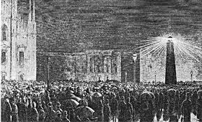

|
Durante la Rivoluzione Industriale, l'elettricità stava emergendo come una forza importante nell'industria e nella società, ma il suo impatto era ancora limitato rispetto a quanto sarebbe diventato in seguito.
Nel corso del XIX secolo, vi furono importanti sperimentazioni e scoperte nel campo dell'elettricità. Tra queste, le ricerche di Michael Faraday e altri pionieri furono fondamentali nello sviluppo delle teorie e delle applicazioni pratiche dell'elettricità.
All'inizio della Rivoluzione Industriale, le applicazioni pratiche dell'elettricità erano ancora limitate. L'energia elettrica veniva principalmente utilizzata per scopi di illuminazione tramite lampade ad arco e a incandescenza, sebbene in modo limitato e costoso.
Verso la fine del XIX secolo, l'elettrificazione industriale cominciò a prendere piede in alcune industrie, come le miniere e le fabbriche tessili. L'energia elettrica cominciò a sostituire altre fonti di energia, come il carbone e il vapore, in alcuni processi produttivi.
L'elettricità iniziò ad essere utilizzata anche nel settore dei trasporti e delle comunicazioni. La ferrovia e il telegrafo furono due settori in cui l'elettricità giocò un ruolo crescente, anche se inizialmente in modo limitato rispetto ai sistemi basati sul vapore e sui cavalli.
La costruzione delle prime centrali elettriche segnò un passo importante nell'elettrificazione delle città durante la fine del XIX secolo. Queste centrali fornivano energia elettrica alle imprese e alle abitazioni, contribuendo a trasformare radicalmente la vita urbana.

|
|